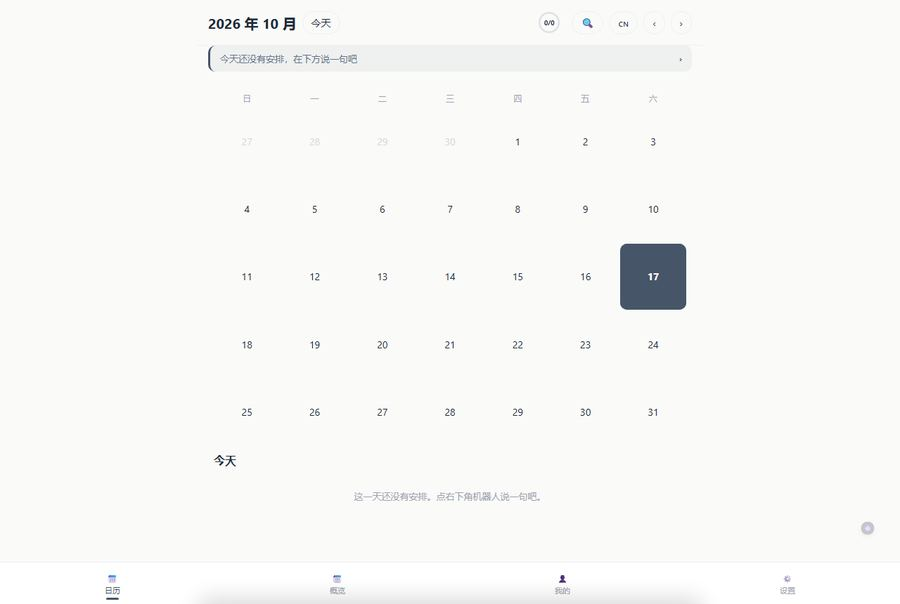
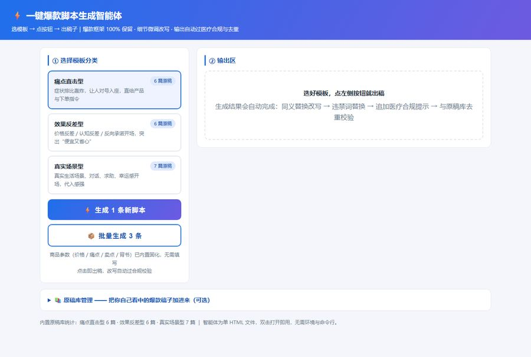
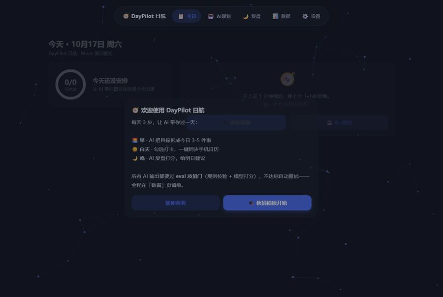
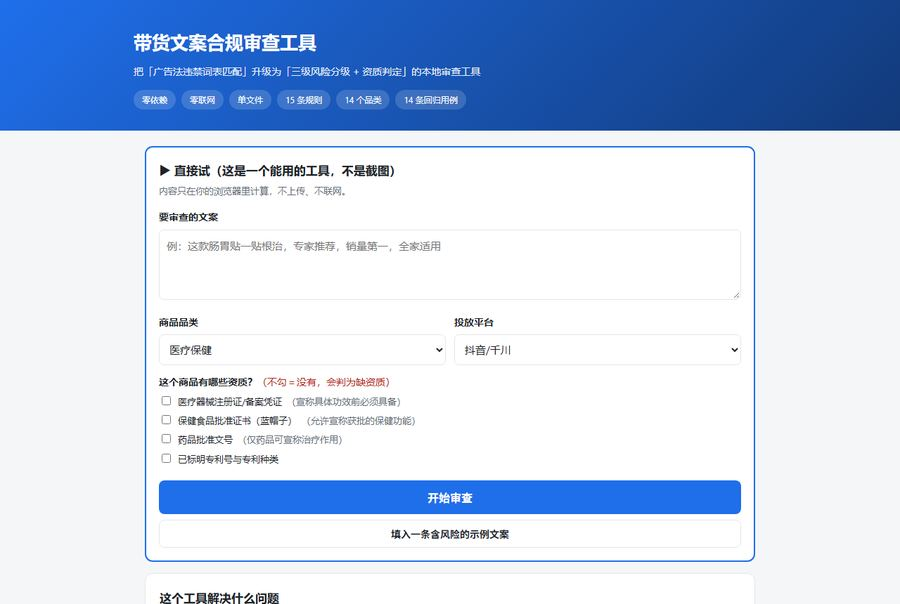
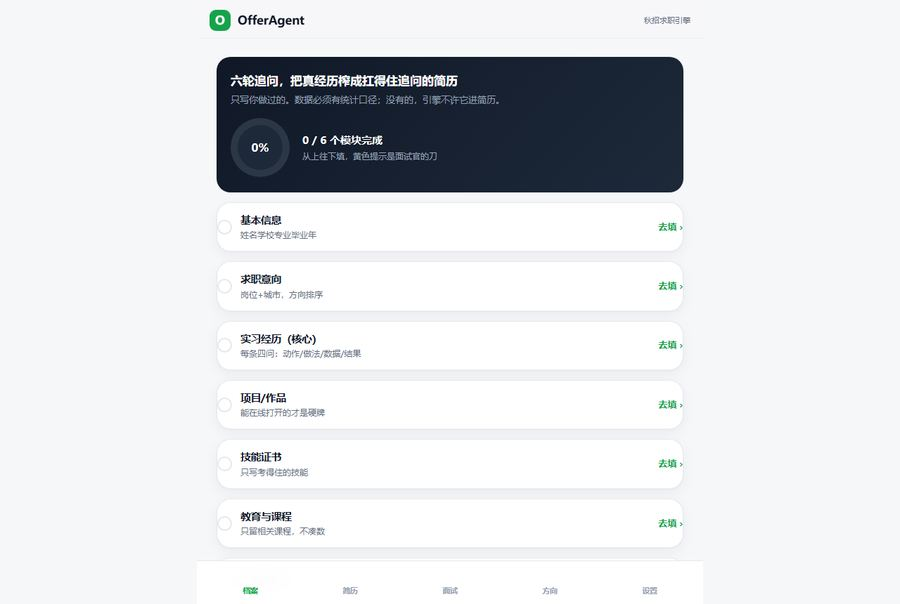

TOOLS-01可试用 · 日历TalkCal · 自然语言日历
说一句「后天下午面试」就自动排进日历。带 LLM 输出质量门，不合格自动打回重试，全程留痕。装了 Service Worker，断网也能开。
LLM 质量门自动重试可离线装v2.6
Five tools you can actually click
这五个都是真能点开用的，不是截图。共同点是都给模型加了一道闸，模型写完先过规则校验和打分，不合格打回重写，不合格的东西不给用户看。
TOOLS-01 — 05 · 单文件 · 零依赖

TOOLS-01可试用 · 日历说一句「后天下午面试」就自动排进日历。带 LLM 输出质量门，不合格自动打回重试，全程留痕。装了 Service Worker，断网也能开。

TOOLS-02可试用 · 脚本从 0 到 1 定义需求与流程，把合规判断写进代码而不是靠人记。违禁词规则、可修复表述替代表、真实爆款脚本库，改规则不用改代码。

TOOLS-03可试用 · 复盘
TOOLS-04可试用 · 合规
TOOLS-05可试用 · 决策LLM OUTPUT GATE · 可审计
L1 规则校验先卡硬约束，结构、字段、时长、重复项。L2 质量打分让模型给自己人打分，从可执行性、优先级、时长合理、目标相关性四个维度。 不达标就自动重试，最多两次，失败原因回传给模型重新生成。网络中断、限流、输出非 JSON 同样计入重试，只有鉴权失败才直接中止。全部过程写进 Eval 日志。